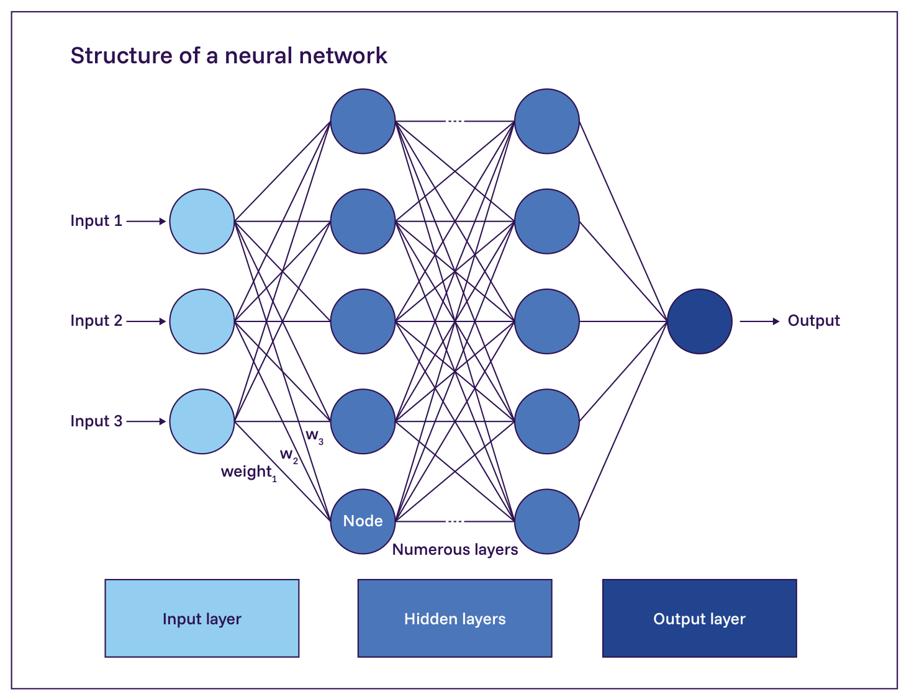
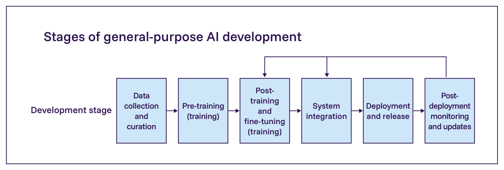
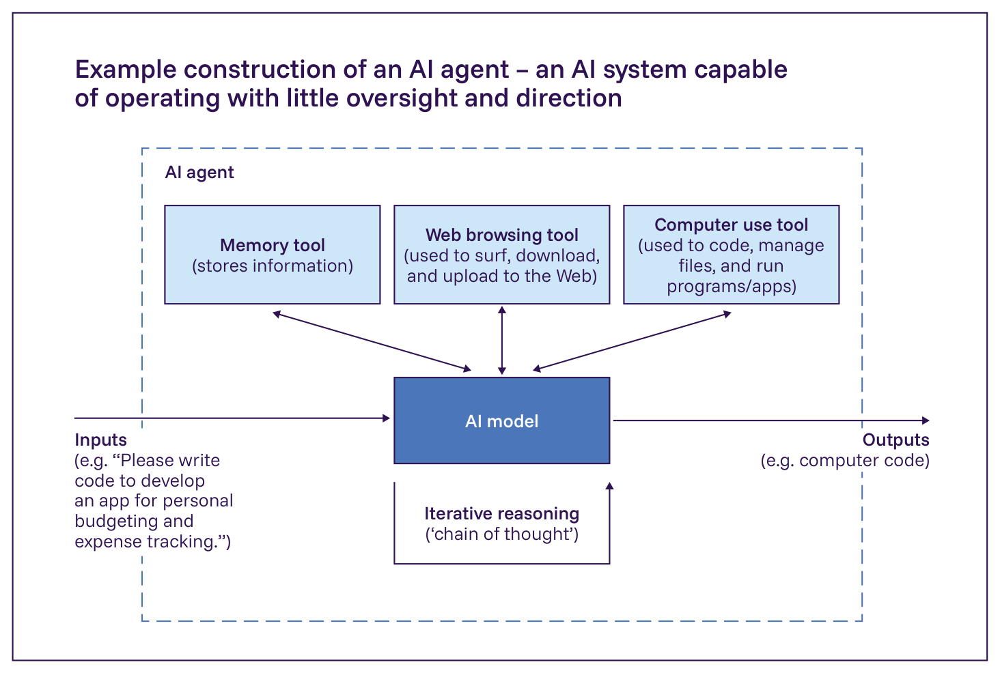

日本語訳
| 汎用AIの種類 | 例 |
|---|---|
| 動画生成器 | Cosmos (17)、Sora (18)、Pika (19)、Runway (19)、Veo 3 (20) |
| 多様な種類の生体分子構造の予測器 | AlphaFold 3 (27)、Amplify (28)、CellFM (29)、Evo 2 (30) |

Figure 1.1: 「ニューラルネットワーク」の説明的な表現。今日の汎用AIモデルは、これらのネットワークに基づいており、生物学的な脳に緩やかに着想を得ている。異なるネットワークは異なるサイズとアーキテクチャを持つ。しかし、すべては「ニューロン」と呼ばれる相互接続された情報処理単位から構成されており、ニューロン間の結合の強さは「重み」と呼ばれる。重みは、大量のデータを用いた訓練を通じて更新される。出典: International AI Safety Report 2025 (50)（改変）。

Figure 1.2: 汎用AI開発の各段階の概略図。出典: International AI Safety Report 2026。Table 1.2: 汎用AI開発の各段階
| 段階 | 説明 |
|---|---|
| 1. データ収集とキュレーション | 汎用AIモデルを訓練する前に、開発者とデータワーカーは、生の訓練データを収集、クリーニング、キュレーション、標準化し、モデルが学習できる形式にする。これは労働集約的なプロセスとなりうる。最先端モデルの背後にある訓練データセットは、インターネット全体からの膨大な数の例から構成されている。チームはしばしば、有害なコンテンツを削減し、重複データを排除し、異なるトピックや情報源にわたる代表性を改善するための高度なフィルタリング手法を開発する（54, 55）。データキュレーションはまた、著作権とプライバシーの侵害を削減し、危険な知識を含む例を除去し、複数の言語を扱い、データの来歴の文書化を改善するのにも役立つ（56, 57, 58）。 |
| 2. 事前学習（第一段階の訓練） | 事前学習の間、開発者はモデルに膨大な量の多様なデータを与え、広範な情報と文脈理解を植え付ける。このプロセスは「ベースモデル」を生み出す。これは、データと計算の両方について非常に集約的なプロセスである。事前学習の間、モデルは画像、テキスト、音声といったコンテンツの数十億から数兆の例にさらされる。この曝露を通じて、モデルは徐々にデータを表現するための抽象的な特徴を発見し、これらの特徴がどのように関連しているかを学習し、新しい入力を文脈の中で理解できるようにする。この事前学習プロセスには数週間から数ヶ月かかり（59）、そのような計算を迅速に処理するために設計された専門のコンピューターチップである、数万から数十万のグラフィック処理装置（GPU）またはテンソル処理装置（TPU）（60）を使用する。一部の開発者は自社のコンピュートで事前学習を実施し、他の開発者は専門のコンピュート提供者が提供する資源を使用する。 |
| 3. 事後学習とファインチューニング（第二段階の訓練） | 「事後学習」は、特定の応用に最適化するためにベースモデルをさらに洗練させる。これは、中程度に計算集約的であり、かつ高度に労働集約的なプロセスである。実世界のデータを模倣するが、アルゴリズムやシミュレーションを用いて作成される、人工的に生成された情報である「合成データ」の使用への移行が、この段階をより労働集約的でなくするのに役立っている。事後学習には、様々なファインチューニング技術とその他の改変が含まれる。「教師ありファインチューニング」は、その領域におけるモデルの性能を改善するために、訓練済みのモデルを特定のデータセットでさらに訓練することを含む（61, 62）。例えば、汎用モデルは、放射線画像の大規模なコーパスでさらに訓練されることがある。「強化学習（RL）」は、望ましい出力に対してモデルに「報酬」を与え（肯定的なフィードバックを提供し）、望ましくない出力に対してモデルに「ペナルティ」を与える（否定的なフィードバックを提供する）ことにより、モデルの性能を改善することを含む。これには二つの顕著な下位区分がある。「人間のフィードバックからの強化学習」は、人間のフィードバックに基づき、人間の選好に沿った出力に報酬を与え、そうでない出力にペナルティを与えることを含む（63, 64）。「検証可能報酬による強化学習（RLVR）」は、数学やコード生成といった、事実の正しさを必要とするタスクにおけるモデルの性能を改善するために使用される。開発者は通常、モデルが望ましい仕様を満たすことを結果が示すまで、事後学習技術の適用とテストの実行を交互に行う。 |
| 5. 展開とリリース | 展開とは、統合されたAIシステムを意図された用途で利用可能にするプロセスである。開発者とデプロイヤーは、AIシステムを実世界のアプリケーション、製品、またはサービスに実装する。開発者は、AIシステムを内部的に（自社の利用のために）、または外部的に（民間顧客または一般利用のために）展開できる。AIシステムを外部的に展開する際、企業はしばしば、ユーザーがシステムにアクセスし実行できるオンラインユーザーインターフェースまたはアプリケーションプログラミングインターフェース（API）を通じたアクセスをユーザーに提供する。例えば、ある企業は、別の企業の汎用AIシステムによって動く、独自仕様のカスタマーサービスチャットボットを設計するかもしれない。「AIシステムの展開」とは、統合されたツールとインターフェースを備えたモデルを実世界での利用のために利用可能にすることを指し、「モデルのリリース」は、オープンウェイト（ダウンロード可能なパラメータ）またはクローズドウェイト（APIアクセスのみ）として、ベースモデルを他者がアクセス可能にすることを含む。§3.4. オープンウェイトモデル を参照。 |
| 6. 展開後のモニタリングと更新 | 開発者はしばしば、ユーザーフィードバックを収集・分析し、影響と性能の指標を追跡し、実世界での利用中に発見された問題に対処するために反復的な改善を行う（67）。改善は、システム統合を更新することによって行われ、しばしば継続的なファインチューニングと、（最近の）事実の外部データベースへのアクセスをモデルに提供することを通じて行われる。これにより、完全な事前学習プロセスを繰り返すことなく、大規模なAIモデルを最新の状態に保つ（68）。これにより、安定性を維持し計算コストを削減しながら、連続する訓練ラウンドにわたって能力を蓄積することが可能になる。 |
| 例: プロンプト | 例: 推論なしのモデルの応答 | 例: 推論モデルの思考の連鎖と応答 |
|---|---|---|
| 朝の光の中で夜のように暗い。私は高いところに住んでいるが、やがて挽かれる。私は乾いたまま座っているが、やがて溺れる。私は何でしょう？ | 答えは「角砂糖」です。なぞなぞがどのように答えに当てはまるか説明します。1. 「朝の光の中で夜のように暗い」— 角砂糖は白いが、暗いコーヒーや紅茶に入れると暗く見える。2. 「私は高いところに住んでいるが、やがて挽かれる」— 角砂糖は必要になるまで戸棚や高い棚のような高い場所に保管されていることが多く、その後、飲み物の中に挽かれるか砕かれる。3. 「私は乾いたまま座っているが、やがて溺れる」— 角砂糖は必要になるまで表面や容器の中で乾いたまま座っているが、（紅茶やコーヒーのような）液体の中に落とされると、その時点で「溺れる」。答えはなぞなぞにうまく当てはまり、巧みな言葉遊びです！ | 各行を分解してみましょう。1. 「朝の光の中で夜のように暗い」— これは、朝が明るいにもかかわらず、朝に暗く見える何かを示唆している。2. 「私は高いところに住んでいるが、やがて挽かれる」— これは、高い位置から始まるが、最終的には低くなる何かを示唆している。時間の経過とともにすり減ったり縮小したりする物理的な何かを指している可能性もある。3. 「私は乾いたまま座っているが、やがて溺れる」— これは、通常は乾いているが、その後濡れたり液体の中で「溺れたり」する何かを示唆している。これらすべての説明に当てはまるものを考えてみましょう。鉛筆？芯は暗く、（鉛筆立ての中など）高いところに座り、使用されるにつれて挽かれ、水に落とされたら溺れる可能性がある。コーヒー豆？暗く、棚の高いところに座り、挽かれ、その後コーヒーを作るために熱湯の中で溺れる。ろうそく？灯されていないときは暗く、高いところに座り、燃えるにつれて挽かれ、水をかけられたら溺れるだろう。鉛筆とろうそくの説明は、高いところにあることや溺れることがそれらの作られ方や使われ方の鍵ではないため、うまく当てはまるように見える。特に「朝の光」への言及を考えると、コーヒー豆の説明の方がよく当てはまると思う。このなぞなぞの答えはコーヒー豆です。 |

Figure 1.3: AIエージェントの説明的な表現：実世界のタスクを達成するために反復的に計画を立て、推論し、ツールを使用するよう構成されたAIモデル（中央）。出典: International AI Safety Report 2026。AIエージェントのためのデジタルインフラストラクチャは拡大しており（91）、様々な産業でますます一般的になっている（92, 93, 94）。AIエージェントは、研究（37）、ソフトウェアエンジニアリング（95）、ロボット制御（96）、カスタマーサービス（97）といったタスクのために開発されている。継続的な研究開発により、着実により高性能で、より自律的なAIエージェントまたはマルチエージェントシステムがもたらされている。研究者は、AIエージェントが達成できるソフトウェアベンチマークタスクの複雑さは、約7ヶ月ごとに倍増すると推定している（§1.2. 現在の能力 も参照）（98）。専門家は、ますます高性能なAIエージェントが、大きな機会とリスクの両方をもたらすであろうと論じている（99, 100）（§2.2.1. 信頼性に関する課題 を参照）。